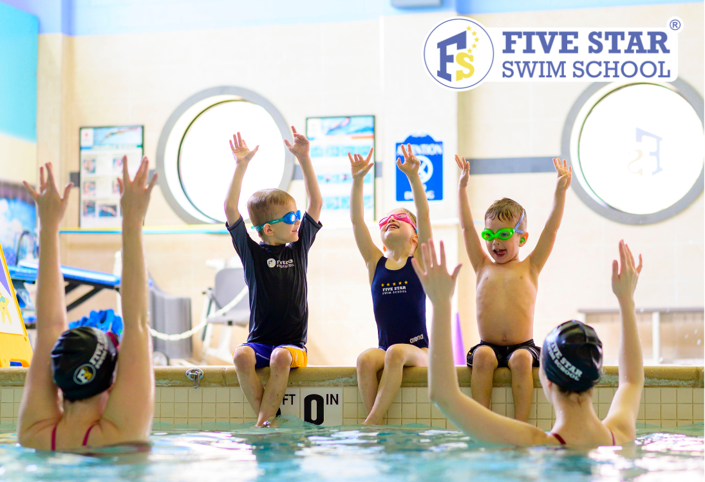

Welcome to Five Star Swim School
Five Star Swim School is a family-owned and operated swim school that has been teaching children how to swim since 2010. We are committed to providing a safe and fun learning environment for all ages and abilities.
We have experienced instructors who use a proven teaching method to help children learn to swim quickly and confidently.
Our programs are specialized with a unique teaching style and methods, similar to the American Red Cross style of swim instruction - utilizing repetition of drills. Each class follows a routine that students get easily accustomed to.
We offer a variety of classes for all levels: from beginner to advanced, and private lessons for those who need extra help.
Classes are divided by age and skill level. The infant classes start as early as 6 months - Parent & Child class (6:1 Ratio).
Children aged 2.5 to 15 are grouped by age categories and separated into appropriate skill levels. With a student-to-instructor ratio of 3:1 in each class, your child will get plenty of attention.
We are proud to be a part of the community and committed to providing quality swim instruction to all children. Our program will help your child learn to swim safely and confidently while having fun at the same time.
What makes us THE best Swim School:
- The Best Student-to-Instructor Ratio (3:1)*
- Classes grouped by Age and Skill Level
- Seahorse 6 months - 2.5 years
- Guppies 2.5 years - 5 years
- Dolphins 5 years - 8 years
- Sharks 8 years - 12 years
- Sea Lions 12 years - 15 years
- Stroke Development 5 years - 15 years
- Adult
- Curriculum Catered Specifically to Children
- Saltwater Pool - Heated to 90 degrees
- Passionate and Highly Trained Staff
- Fun and Safe Environment
- Year-round Swim Lessons
- We’re a Family-Owned Business
We are proud to say:
- We offer year-round swim instruction.
- Swim make-ups are available during the session.
- We introduce swim goggles as early as 2.5 years old.
- We do not use any flotation devices besides swimming equipment.
- We offer student evaluation for new and existing customers to make sure every student is in the correct.